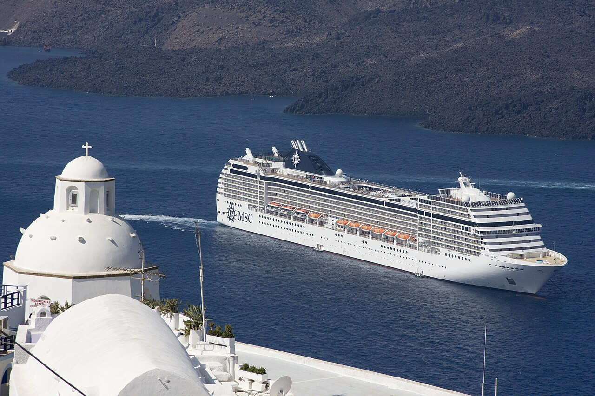

CRUZEIROS · TEMPORADA 2026/27
MSC Musica

O MSC Musica tem opções de cruzeiros com embarque em Santos pelo Brasil, Argentina e Uruguai.
Veja os percursos e cidades da temporada na página de cruzeiros da RUD Viagens.
Ver navios e roteiros MSC →